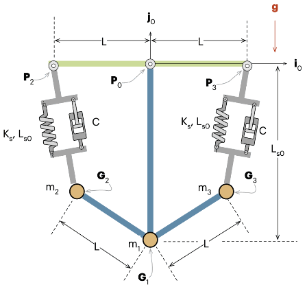

Course Mechatronics System ModellingSpring-loaded mechanical system-Homework 2
Stefano Tonini 248413

The mechanical system in the picture is made by three masses which are connected by two bars of the same lenght L.
The masses m2 and m3 are connected to ground by the spring-damper system with spring having natural length L__s0 and stiffeness and damping cooefficients respectivelly K__s2, K__s3 and C__s2 and C__s3.
Initialization
List of MBD procedures
Kinematics
Principle of Virtual Work - equilibrium conditions
Lagrange Equations
Numerical solution and plots
Optional: optimisation